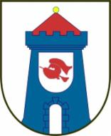

SV Stahl Thale e.V. Abt.: BOXEN (Amateur-Boxsport)

Internationale und nationale herausragende Leistungen der aktiven Sportler des Vereins
( !! weiter unten in dieser Rubrik !! )
Trainingsstätte:
Sporthalle der Grundschule "Auf den Höhen", am Tunnelberg, 06502 Thale
Trainingszeiten:
Montag und Donnerstag von 16.30 - 18.00 Uhr
Stand: Januar 2026 laut Facebook-Seite der Abteilung Boxen (bei Bedarf Verlängerung bis 19.00 Uhr). Zusätzlich betreibt der SV Stahl Thale die Boxgarage Westerhausen mit Fitnessboxen, Kinder- und Seniorentraining – 2023 vom LSB als „Verein des Monats“ ausgezeichnet.
Ansprechpartner:
B. Krug / G. Strathausen / J. Moog (qualifizierte Iizenzierte Fachtrainer für den Boxsport, aktuell Amateur-Lizenz)
Email: sv.stahl.thale.boxen@t-online.de
Ansprechpartner Stand 2014; Abteilungsleiter laut BVSA-Mitgliederliste: Bernd Krug.
Die Beiträge sollten beim Verein direkt erfragt werden.
Archiv: Die Erfolgsgeschichte des Vereins (Stand 2014)
2014 P. Sporys 1. Platz bei den Landesmeisterschaften in Sachsen/Anhalt
2014 R. Koch 1. Platz bei den Landesmeisterschaften in Sachsen/Anhalt
2013 L. Hildebrand 1. Platz bei den Landesmeisterschaften in Sachsen/Anhalt